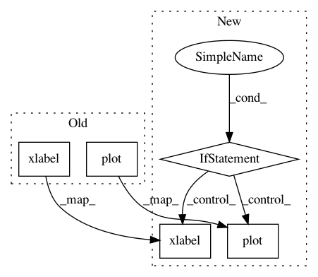

5508d6730a37f9aff49549901ff8682898e14b5d,brats/evaluate.py,,main,#,27
Before Change
training_df = pd.read_csv("./training.log").set_index("epoch")
plt.plot(training_df["loss"].values, label="training loss")
plt.plot(training_df["val_loss"].values, label="validation loss")
plt.ylabel("Loss")
plt.xlabel("Epoch")
plt.xlim((0, len(training_df.index)))
plt.legend(loc="upper right")
plt.savefig("loss_graph.png")
After Change
plt.savefig("validation_scores_boxplot.png")
plt.close()
if os.path.exists("./training.log"):
training_df = pd.read_csv("./training.log").set_index("epoch")
plt.plot(training_df["loss"].values, label="training loss")
plt.plot(training_df["val_loss"].values, label="validation loss")
plt.ylabel("Loss")
plt.xlabel("Epoch")
plt.xlim((0, len(training_df.index)))
plt.legend(loc="upper right")
plt.savefig("loss_graph.png")
if __name__ == "__main__":
main()
In pattern: SUPERPATTERN
Frequency: 3
Non-data size: 5
Instances
Project Name: ellisdg/3DUnetCNN
Commit Name: 5508d6730a37f9aff49549901ff8682898e14b5d
Time: 2018-03-20
Author: david.ellis@unmc.edu
File Name: brats/evaluate.py
Class Name:
Method Name: main
Project Name: rasbt/mlxtend
Commit Name: f0f4ba31aaec58f607df632cfbec5fd39802958f
Time: 2015-04-09
Author: se.raschka@me.com
File Name: mlxtend/evaluate/learning_curves.py
Class Name:
Method Name: plot_learning_curves